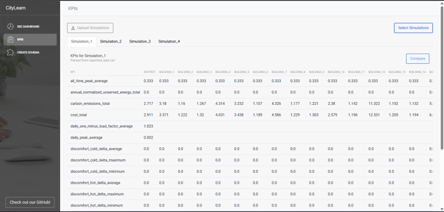
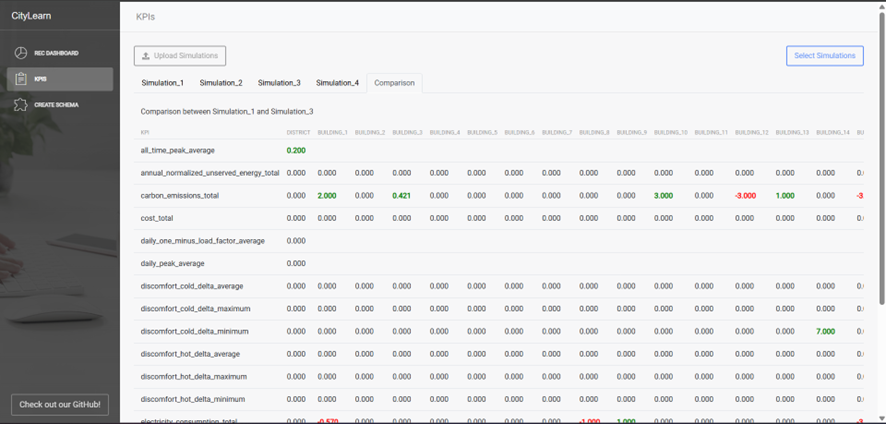

KPIs
This page documents the dedicated KPIs tab in CityLearn UI. The tab is fed by exported_kpis.csv and, by default, that file is generated from citylearn.citylearn.CityLearnEnv.export_final_kpis() using citylearn.citylearn.CityLearnEnv.evaluate_v2().
KPIs Page Overview
The KPIs page allows uploading folders and selecting simulations for KPI analysis. Once a simulation is active, its KPIs appear in a table (rows = KPIs, columns = buildings). The UI reads V2 exports only.

KPI v2 Overview
V2 groups metrics by building_* and district_* prefixes, then by family:
cost: total, daily average, and ratio-to-baseline cost KPIs in EUR.energy_grid: import, export, net exchange, ratios to baseline, and shape-quality KPIs.emissions: control, baseline, and delta totals and daily averages inkgco2.solar_self_consumption: PV generation, export, and self-consumption KPIs.ev: departure counts, strict success, minimum acceptable service, symmetric tolerance accuracy, SOC error diagnostics, charge, and V2G export.battery: charge, discharge, throughput, equivalent full cycles, and capacity fade.electrical_service_phase: violation totals, event counts, phase imbalance, and phase peaks.equity: relative benefit, Gini, top-20 concentration, losers percentage, and BPR.comfort_resilience: discomfort and resilience KPIs.
The EV block currently exposed in the tree includes, for example:
district_ev_events_departure_countdistrict_ev_events_departure_met_countdistrict_ev_events_departure_min_acceptable_countdistrict_ev_events_departure_within_tolerance_countdistrict_ev_performance_departure_success_ratiodistrict_ev_performance_departure_min_acceptable_ratiodistrict_ev_performance_departure_within_tolerance_ratiodistrict_ev_performance_departure_soc_deficit_mean_ratiodistrict_ev_performance_departure_shortfall_beyond_tolerance_mean_ratiodistrict_ev_performance_departure_soc_absolute_error_mean_ratiodistrict_ev_total_charge_kwhdistrict_ev_total_v2g_export_kwh
The community-market V2 KPIs are district-only:
district_energy_grid_community_market_local_traded_total_kwhdistrict_energy_grid_community_market_local_traded_daily_average_kwhdistrict_solar_self_consumption_community_market_import_share_ratio
Community market toggle
When
community_market.enabled = false, the settlement step does not run. The district-only community-market KPIs above are omitted from the V2 export, while the broadercommunity_*settlement totals remain in the table as zero because there is no market history.When
community_market.enabled = true, the settlement history is recorded and the community totals become meaningful.community_market.kpis.community_local_traded_enabledcontrols the local-traded district KPI pair.community_market.kpis.community_self_consumption_enabledcontrols the district import-share KPI.
Old vs New API
from citylearn.citylearn import CityLearnEnv
env = CityLearnEnv(schema, central_agent=True, render_mode='none')
legacy_kpis = env.evaluate() # Legacy naming, kept for compatibility
v2_kpis = env.evaluate_v2() # V2 naming used by the UI/export
env.export_final_kpis(filepath='exported_kpis.csv') # Defaults to V2
Comparing Simulations
When multiple simulations are loaded, a Compare button lets you choose a reference run. The comparison tab shows Simulation Y – Simulation X deltas.
Positive values (improvements) appear in bold green.
Negative values (declines) appear in bold red.
Zero differences remain black.
